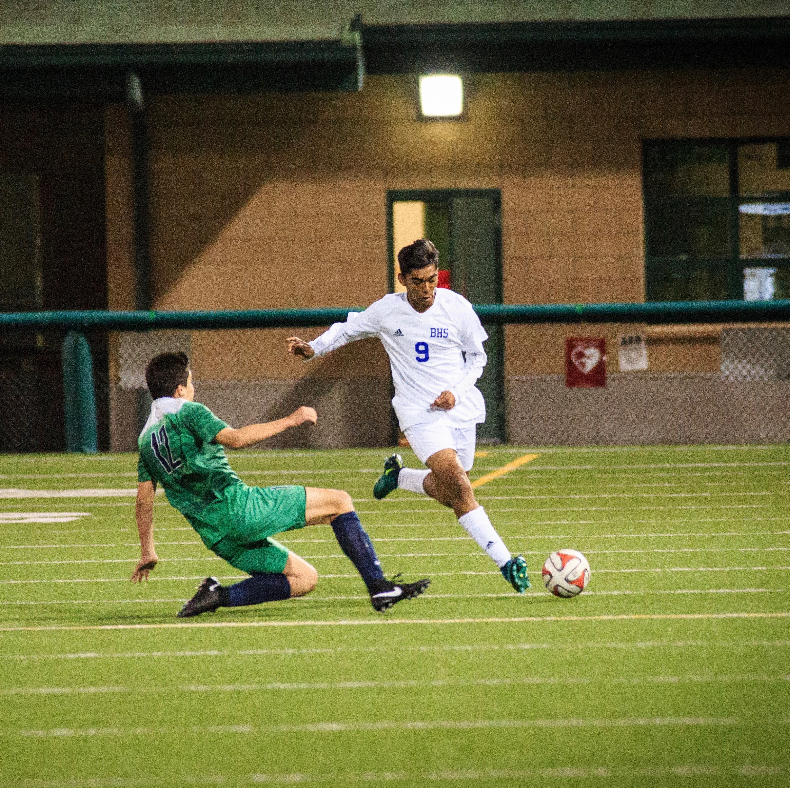
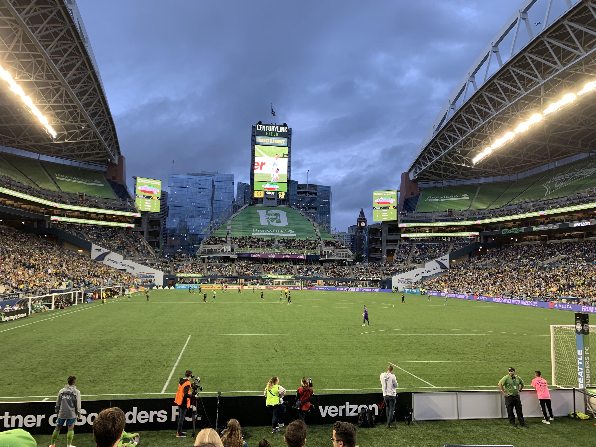

Achintya SinghStudent at Paul G. Allen School of Computer Science I am a student at the Paul G. Allen School of Computer Science at the University of Washington. I am experienced in Wed Development, Python, and JAVA, and I have created many projects encapsulating ideas of object orientated programming, web scraping, and automation. My interests are in exploring Data Science and Artificial Intelligence with a passion for new emerging technologies and being at the forefront of innovation. |
Paul G. Allen School of Computer Science
Bachelor of Arts in Computer Science
North Creek High School, Bothell, WA
GPA: 4.0
SAT Score: 1520
National Honor Society, Red Cross RFL Caseworker and IHL Youth Advocate, Red Cross Club President, DECA, Varsity Athlete, Honor Roll
| AP Course | Exam Score |
|---|---|
| AP Computer Science A | 5 |
| AP Calculus BC | 5 |
| AP Calculus AB | 5 |
| AP Statistics | 5 |
| AP Eng. Lang. & Comp. | 5 |
| AP Physics 2 | 4 |
| AP Physics 1 | 4 |
| AP Gov. & Politics | 4 |
Crossfire Soccer Club, Redmond, WA
Crossfire Academy and ECNL player
Currently playing soccer at one of the highest levels in the nation. Competed against top tier academy teams from different MLS (Major League Soccer) organizations across the country. Was the only freshman to make the varsity soccer team at Bothell High School, played a starting position at left-back. Led my club team to several tournament victories and was the captain in 8th and 9th grade.
Red Cross, Bothell, WA
Club President and Founder
Restoring Family Links Caseworker, International Humanitarian Law Youth Advocate
Currently playing soccer at one of the highest levels in the nation. Competed against top tier academy teams from different MLS (Major League Soccer) organizations across the country. Was the only freshman to make the varsity soccer team at Bothell High School, played a starting position at left-back. Led my club team to several tournament victories and was the captain in 8th and 9th grade.
Crossfire Soccer Club and Arena Sports, Redmond, WA
Crossfire Juniors Program Head Coach and Arena Sports Youth Coach
Coordinated and led team practices helping young athletes improve their soccer skills through drills, scrimmages, and games against other clubs. Athletes improved over the season and created healthy bonds with teammates. Communicated to parents about the athletes and their progression in the game of soccer.
Bloodworks NW, Seattle, WA
Blood Donor Monitor
Volunteered as a blood donor monitor at the Overlake Medical Center and helped operate local blood drives. Worked with healthcare professionals to operate simple medical equipment and set up blood donor tables. Observed patients after they had donated blood to ensure no signs of distress or nausea. Offered donors snacks and refreshments to replenish nutrients and facilitated registration for future blood donations.
YMCA Northshore, Bothell, WA
Summer Lunch Program and YMCA Wrap-Around Care Camp Volunteer
Served lunches to young kids at the Kenmore City Hall. Entertained kids with fun activities and games after meals. Kids were able to collaborate in an enjoyable learning environment and develop social skills. Also, volunteered at the YMCA camp care during the summer. Guided large groups of young kids in interactive physical and educational games. Created bonds with the children making their time at YMCA enjoyable and impactful.
Soccer has been an integral part of my life for the past 12 years. Even though I started the sport at a very young age, never did I think it would stick with me until now. Over the years I have played thousands of minutes on the grass pitch where I have experienced every emotion known to mankind. From tears of defeat to ecstatic cheers of victory I have experienced it all. Yet, soccer was so much more for me than just a sport. Having a ball at my feet allowed me to detach from the stresses of our day-to-day life that we undoubtedly feel. Soccer also enlightened me to one of the values in life that I hold very close to my heart —— that is progression and growth. When I first started the sport I played recreation and through determination and hardwork I was able to progress all the way to the National Academy level. I have no doubts that soccer will remain with me for however long my life lasts.
